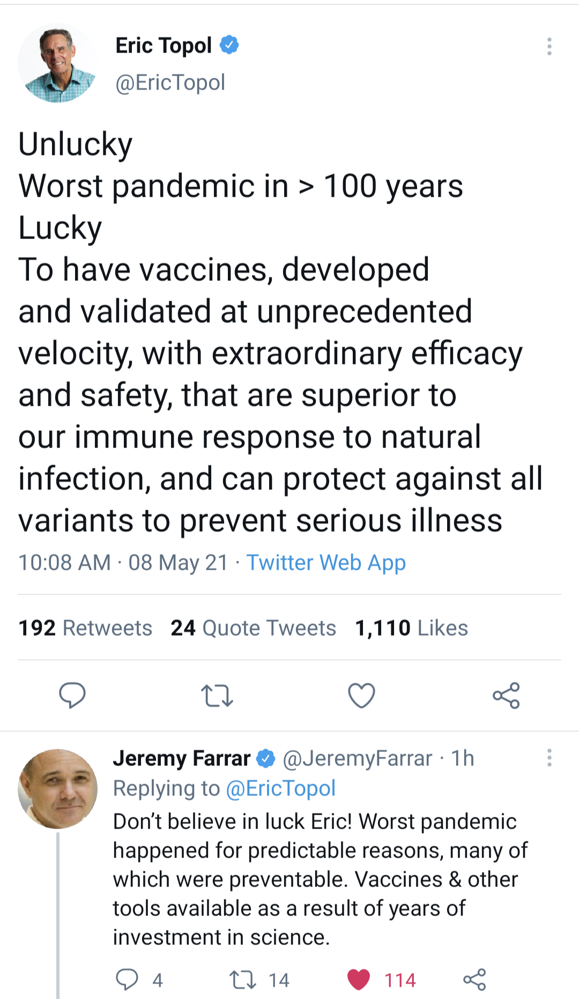

![]()
We Got Lucky
This post was spurred by the following tweet and response.

Did we get lucky with great vaccines? Some would say yes, we got results that far exceeded expectations in a very accelerated timeline. Is that the definition of luck?
From OED the first definition of luck is:
Success or failure apparently brought by chance rather than through one’s own actions.
So developing sophisticated science that is safe and effective right when the world needs it defined as “apparently bought about by chance rather than through one’s own actions.” I think, paraphrasing Aaron Eckhert’s “Harvey Dent”, we make our own luck. That is not to discount that there is some degree of stochasticicity in some our actions and results. Additionally, there is the effect of being at the right place at the right time, but I would call this more serendipity than luck.
The rest of this post will basically center on the idea that saying something is lucky undermines the hard work and efforts of all of those involved in any kind of achievement. What appears to be luck is often experience and education preparing a group of people to better solve problems. Plus a “lucky” solution can be found by leveraging experience and knowledge to better define the problem so that the solution just seems to “appear.” Additionally, the idea of luck is inconsistent because no one believes all failures are due to bad luck. Finally the idea that things are lucky seems to lead one to the hero scientist narrative when in reality science and discoveries tend.
Counterfactual - Failures are Just Bad Luck
When making a claim it is useful to carry it to its logical extremes and examine all of its properties. If making a reliable product is luck, then failing to do so is bad luck. If that isn’t true, then making a useful product is sometimes luck, the what qualifies as luck? It’s luck only when there isn’t a legacy of research, a big well of money to fund current research, a relatively well defined problem, some of the most brilliant minds in the world working with singular passion day and night to develop a solution? Yeah, so you get where I’m going. I like the quote spuriously attributed to Thomas Jefferson, that the harder one works the more luck one seems to have.
Hard Work and Success
The point of this post is to say that telling someone that they were lucky is undermining their hard work and the work upon which they relied. This view tacitly embraces the scientist as lucky hero, Flemming style, in the lab and stumbles upon some great discovery that works marvelously. Maybe that happens, but that undermines the fact that the scientist (or more likely group of scientists) with years of training were in the lab in the first place doing experiments and had the foresight to recognize a discovery. Serendipity has a roll perhaps, but I wouldn’t say it’s all luck. Kind of like the Apollo 13 crew was lucky, but lucky that the had some brilliant minds working the problems, engineering solutions, and communicating with them to get home.
Important to mention that most of the engineers at NASA were white men.
Well Defined Problems
Finding the solution to a well defined problems is one of the easier tasks in my opinion. The narrower the scope, the more one can leverage knowledge and experience. A lifetime ago I worked in manufacturing. One thing I learned is that working with rubber is challenging, especially when you want it to go where you tell it to. Rubber has varying “tack” or the coefficient of friction changes over time as different chemicals migrate to the surface (e.g., how sticky it is changes with time). Worse this property can vary depending on storage conditions and where it is in the storage unit. Plus, you have all the normal manufacturing variation from upstream processes (like the calendering process where sheets are made).
All of this is context for a project of which I was the leader. My colleagues and I had done many studies on the material properties and on the manufacturing processes upstream and downstream in order to generate a process improvement.
We working with the engineering teams in order to specify a modification that would solve a particular issue given all of our studies. When the time came to put in the modification, it didn’t work. The reason we were doing this performance improvement modification was to improve quality and output in a capacity constrained shop. Finding that the modification didn’t work during a shutdown in which the shop would need to start the next day was alarming. But we started to work the problem with all the operators, mechanics, engineering, methods–everyone. We started to lay out everything we knew, what the facts were, what studies had shown up. Eventually we defined the problem we needed to solve in a smaller box. Once we did that, one of the mechanics, an old Polish emigre, said, “I know what we can do, I did something to solve this years ago.” We mocked up what he told us, and bam, it worked! Not only did it work, it worked better than we had hoped. With the engineers in the room, we made the mock-up even better. Were we lucky? Well, we had done all of the research, we had all the experts around the table, we discussed the problems and defined exactly the issue and what we needed to happen, and once we did that, we had a guy who was a real expert remember something related to exactly that problem come up with a solution. Was that luck?
Which if you want to be a data scientist is an exceptional opportunity. Getting involved in experimental design, data collection, and propagation of errors, you really get to understand the entire process. After doing all this you get to do the statistics and communicate them to a variety of audiences in order to first show understanding of the problem and then design something to improve.
I think everything that we did made us successful. Because we had done the studies, we knew what we were working with and what performance criteria we needed to achieve. Because we had experience around the table, we had histories of machine modifications and years of observation on what might work (and also importantly what wouldn’t). Because we all discussed together exactly what we knew, what we didn’t, what problem we needed to solve, we had half of the solution defined in our new problem definition. Take away any of the hard work or any one member of the team who contributed something along the lines during solution development and it wouldn’t work. Why didn’t the first solution, the original modification not work. Bad luck? Nope, it was a prototype. It was a solution that failed, but in its failure gave us more data on what wouldn’t work and thus limited the solution space further. Hard work and perseverance led to a solution.
This is also why when people take away hard luck from the solution, the lone scientist hero comes up. Anyone can be lucky. However, hard work requires dedication, effort, and practice. Science is rarely done in a vacuum. You stand on the shoulders of the greats and learn from first principles, reading the literature, exploring what was done and what the next steps could be. Science and engineering are team sports.
Reuse
Citation
@online{dewitt2021,
author = {Michael DeWitt and Michael DeWitt},
title = {The {Myth} of {Luck} and the {Lone} {Scientist}},
date = {2021-05-08},
url = {https://michaeldewittjr.com/posts/2021-05-08-the-myth-of-luck-and-the-lone-scientist/the-myth-of-luck-and-the-lone-scientist.html},
langid = {en}
}